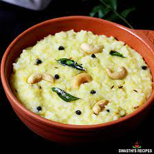

Pongal Recipes

DESCRIPTION
Pongal , a traditional food of tamilnadu. I love it
Ingredients
Rice
Water
More gheee
jeera
pepper
Steps
- Just a random guess not a real steps
- lets wash the rice
- Let the rice soak for about an hour
- Cook the rice and wait till it get gooey
- add ghee to get good smell and taste
- add peper and jeera
- dish is ready